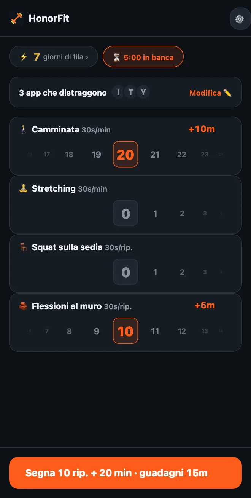

Niente flessioni? Esercizi a basso impatto per sbloccare le tue app
Ciao a tutti! HonorFit è conosciuto soprattutto come app che blocca le app finché non fai le flessioni (in inglese): le tue app restano bloccate finché non fai qualche ripetizione e la segni tu. Ma se i tuoi polsi, le spalle o le ginocchia non ne vanno matti, o passi tutto il giorno alla scrivania, o le flessioni in questo periodo proprio non sono cosa, va benissimo così.
Per me il punto non sono mai state le flessioni. Il punto è un piccolo dosso tra te e lo scroll, uno che per di più ti fa bene. Un giro dell’isolato fa lo stesso lavoro. Ecco come impostare HonorFit con cose che riesci a fare davvero.
Se usi la versione gratuita
La versione gratuita ti dà i quattro esercizi di base: flessioni, addominali, trazioni e squat. Tra questi, gli squat sono i più leggeri, e valgono 30 secondi l’uno.
E visto che funziona sulla parola (in inglese), nessuno controlla com’è fatto il tuo squat. Se uno squat completo è troppo, alzarti da una sedia e rimetterti seduto conta. Stessa cosa per le flessioni contro un muro o il piano della cucina. Decidi tu cos’è una ripetizione, e la segni onestamente.
Con Pro: scegli i tuoi
Pro (3 $ al mese oppure 19,99 $ una tantum negli Stati Uniti; il prezzo cambia in base al paese e alla valuta, e lo store ti mostra il tuo) ti fa aggiungere, rinominare e togliere esercizi e decidere quanto vale ognuno. Ci arrivi dall’ingranaggio nella schermata principale, poi dalla scheda Esercizi. Ho spiegato ogni passaggio dell’editor qui. Queste sono le cose a cui guarderei.
Allenamenti a tempo (segnati in minuti)
Passa un esercizio qualsiasi su Minuti, oppure tocca uno dei suggerimenti con il ⏱. Quelli che fanno al caso tuo:
- 🚶 Camminata. La mia preferita per questo. Probabilmente la vittoria più facile che ci sia.
- 🧘 Yoga, oppure rinominalo in Stretching se è più quello che fai.
- 🏊 Nuoto e 🚴 Bici, entrambi delicati con le articolazioni.
- 🪷 Meditazione. Non è esercizio, ma c’è, e dieci minuti di calma sono un ottimo scambio per dieci minuti di TikTok.
Gli allenamenti a tempo partono da 30 secondi di app per minuto, quindi una camminata di 20 minuti vale 10 minuti. La rotella conta minuti interi, fino a 100 alla volta.
Movimenti da scrivania (segnati in ripetizioni)
Tocca ＋ Aggiungi esercizio e scrivi un nome. Eccone alcuni che funzionano in ufficio o in un appartamento piccolo, senza attrezzi:
- Squat sulla sedia: alzati dalla sedia e rimettiti seduto.
- Flessioni al muro o flessioni alla scrivania: flessioni contro un muro o una scrivania bella stabile. Più è alta la superficie, più sono facili.
- Sollevamenti sulle punte: sali sulle punte dei piedi e torna giù. Puoi farli mentre aspetti il microonde.
- Marcia sul posto: il suggerimento Skip alto, solo più lento. Rinominalo se vuoi.
- Ponte glutei e Kegel: silenziosi, senza attrezzi, e i Kegel li puoi fare in riunione senza che nessuno se ne accorga. Ci ho scritto un articolo intero.
Esercizi isometrici (plank, sedia al muro)
Visto che la rotella dei minuti conta minuti interi, un plank di 20 secondi lì non ci sta bene. Io lascerei gli isometrici su Rip. e deciderei cosa vuol dire una ripetizione, tipo “una tenuta di 20 secondi”. Plank e Sedia al muro sono entrambi tra i suggerimenti.
Quanto dovrebbe valere ognuno?
I nuovi esercizi partono da 30 secondi a ripetizione. Puoi salire o scendere di 5 secondi alla volta. Qualche punto di partenza:
| Esercizio | Conta | Vale | Per esempio |
|---|---|---|---|
| 🚶 Camminata | Minuti | 30s al minuto | camminata di 20 minuti = 10 min |
| 🧘 Stretching | Minuti | 30s al minuto | 10 minuti = 5 min |
| 🪑 Squat sulla sedia | Rip. | 30s a ripetizione | 10 = 5 min |
| 🧱 Flessioni al muro | Rip. | 30s a ripetizione | 10 = 5 min |
| Sollevamenti sulle punte | Rip. | 10–15s a ripetizione | 20 da 15s = 5 min |
| Plank | Rip. (1 rip. = tenuta di 20s) | 1 min a ripetizione | 3 tenute = 3 min |
Sono solo le mie stime di cosa sembra giusto. Il numero giusto è quello che pagherai davvero invece di barare. Se camminare è l’abitudine che vuoi costruire di più, falla valere di più, tipo 1 minuto al minuto.

Qualche configurazione da copiare
- Giornata in ufficio: Squat sulla sedia, Flessioni al muro, Sollevamenti sulle punte, Camminata.
- Leggera: Camminata, Stretching, Squat sulla sedia, Flessioni al muro (è lo screenshot qui sopra).
- Tranquilla: Camminata, Yoga, Meditazione.
- Appartamento silenzioso: Ponte glutei, Kegel, Squat sulla sedia, Camminata.
Io starei su tre o quattro, perché ognuno ha la sua rotella nella schermata principale.
E se hai un infortunio, dolore o un problema di salute, chiedi al tuo medico o a un fisioterapista cosa va bene per te. Io faccio un’app che blocca le app; non sono la persona a cui chiedere delle tue ginocchia, ahah.
HonorFit Blocker è un’app gratuita per iPhone e Android che blocca le app. Funziona sulla parola: niente fotocamera, nulla esce dal tuo telefono. Esercizi personalizzati e allenamenti a tempo sono inclusi in Pro. Non è per tutti, ma magari a qualcuno di voi piacerà!